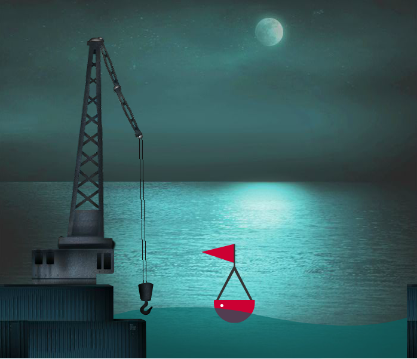
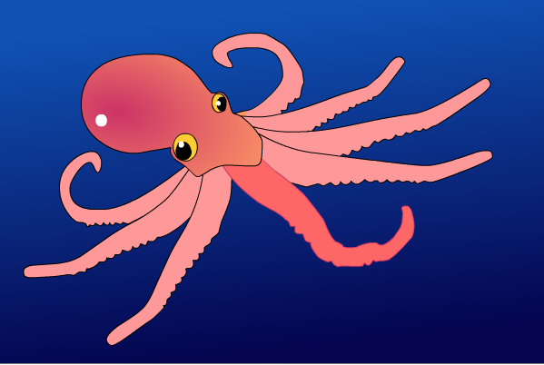
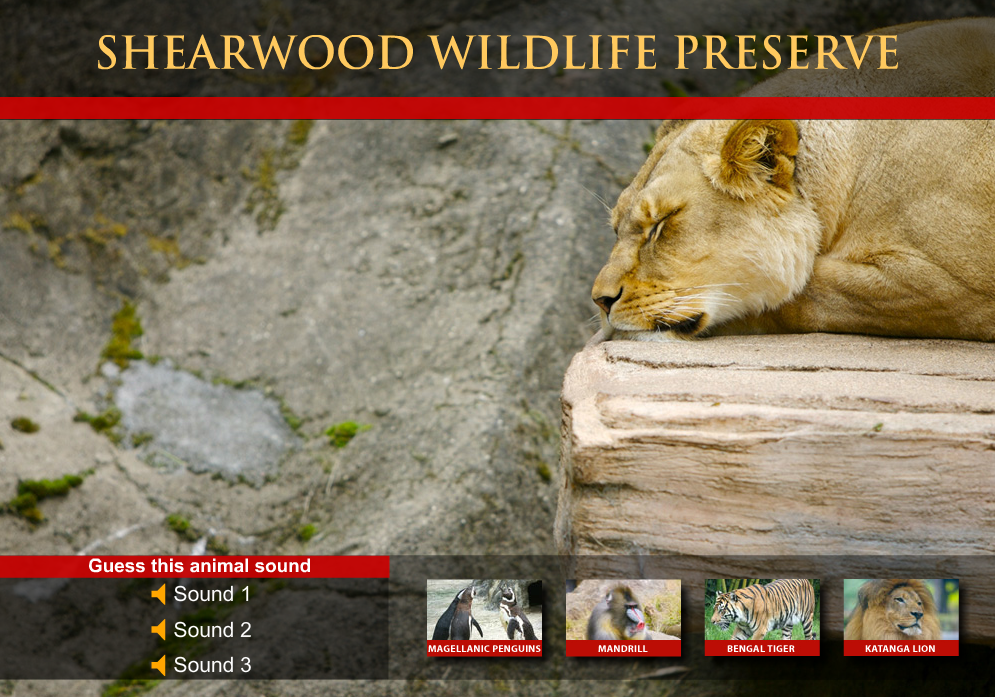
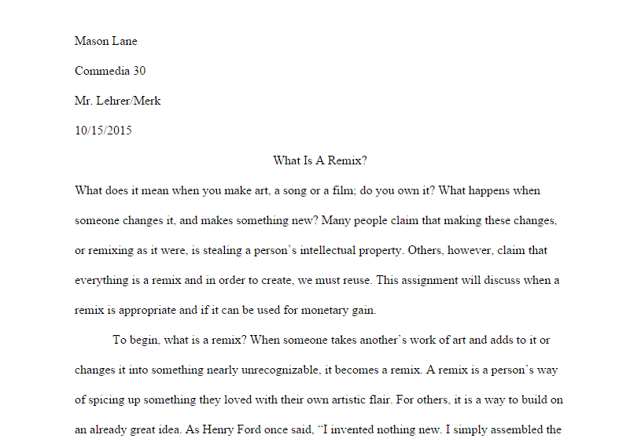
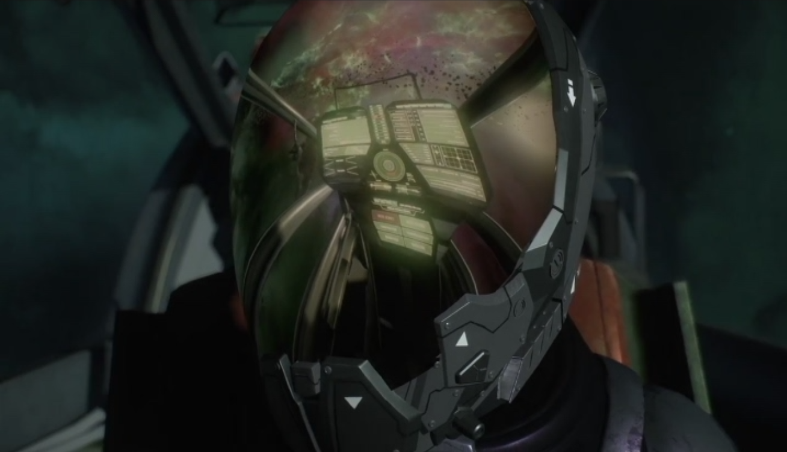
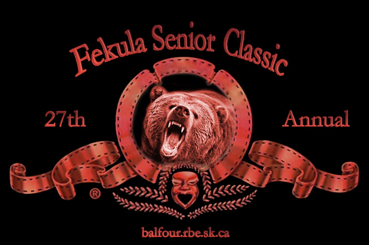
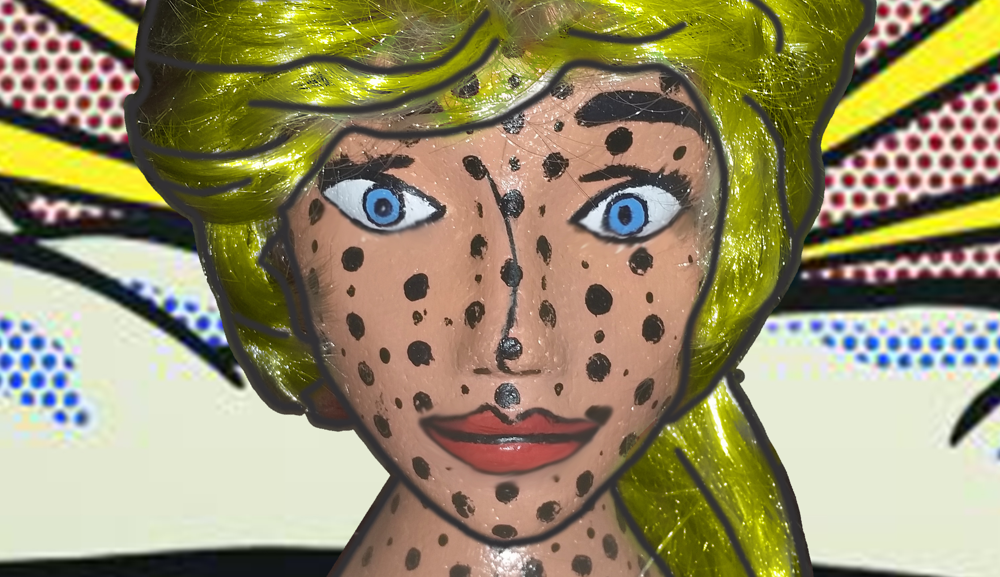
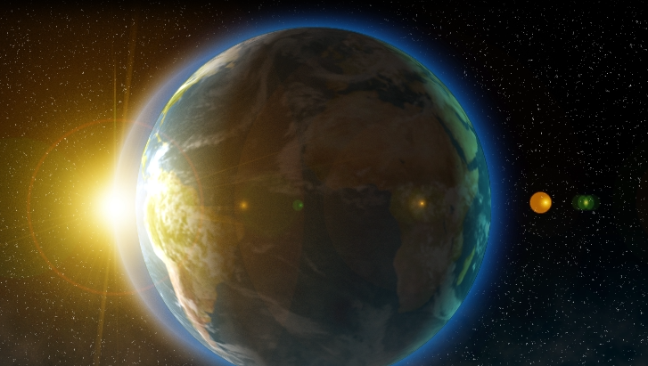
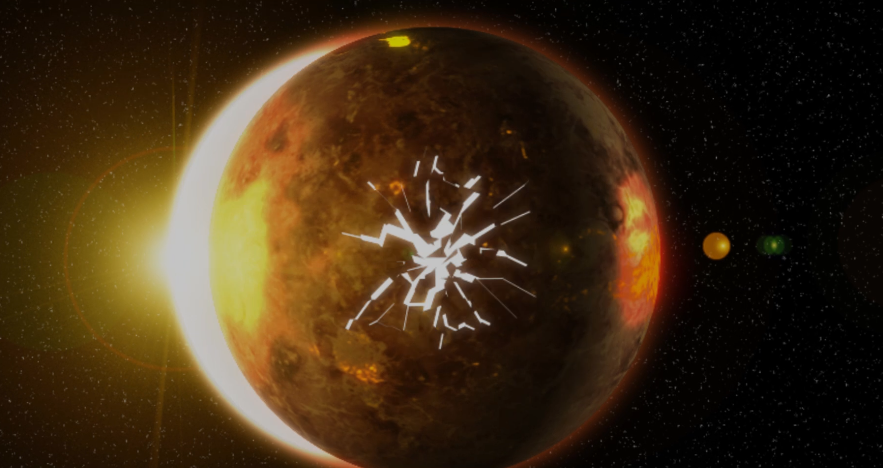
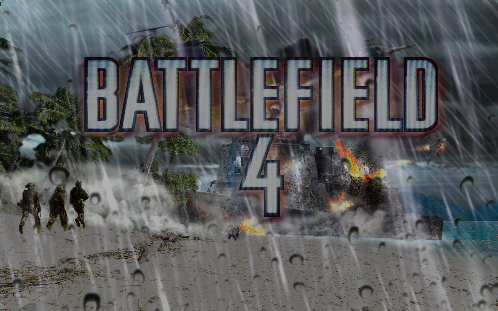

|
|
|
|
|||||
Modules |
Date Started |
Date Finished |
Lesson 05 - Flash Pro Classroom In a Book |
Sept. 21, 2015 |
Sept. 23, 2015 |
| Maya Introduction | |
| I am taught the system requirements and how to set up/open the lesson files. | |
| Getting started in Maya | |
| I am shown the Maya interface, views, how to navigate, hotboxes, how to select objects, movin, rotating, scaling, moving pivot points, etc. I learn how to edit atributes, use the channel box and use the greace pencil tool. | |
| Organizing Maya Scenes | |
| I am shown what an outliner is, how to use heirarchies, grouping objects into heirarchies, pivoting groups, hiding objects and working with masks. | |
| Polygonal Models | |
| I learn the difference between nurb objects and poly objects and how to create them. I learn how to select parts of an object, use soft select or select the reflections (either side to ensure both sides change the same). I learn about sculpting, combieing and separating, booleans and sub surfaces. | |
| Editing Meshes. This teaches me how to use the modeling tools, extrude, extrude along set paths, polygon bridges, bevels, merging vertices and edges, etc. | |
| Refining Meshes | |
| I learn how to use edge loops, smooth geometry, reorient geomertry, draw details, mirror objects, model with nonlinear deformers, lattices. | |
| Lesson 05 - Flash Pro Classroom In a Book Part One | |
In this lesson, I learned how to use the bone tool more effieciently, this included using multiple symbols to create one body (the crane). The bone tool allows you to make objects that can be attatched to eachother in order to create a dependant heirarchy of movements (bones). The lesson also taught me more about shape tweening and easing in and out of tweens (you can see this by looking at the water) |
 |
| Lesson 05 - Flash Pro Classroom In a Book Part Two | |
This Lesson taught me how to use the bone tool on a single object (not multiple symbols). It is usefull when you need to animate arms or perhaps tentacles! |
 |
Lesson 06 - Flash Pro Classroom in a Book - Buttons |
|
This was my first time learning how to use action script. It is a very picky language. In this lesson, I had to make animated buttons which qued other animations through action script. This is helpful when you only want parts of your animation to play at certain moments. i never expected Flash Pro to be used like this. |
|
Lesson 08 - Flash Pro Classroom in a Book - Working with Sound/Video |
|
This was a very important lesson for me, as I did not know how to properly use video or audio on Flash. It taught me how I can use audio better when lipsyncing, etc. I also learnt more complex button usages and action script. Tip - set your audio to steam in the properties, that way you can stop, start and glide across the timeline, hearing the sound at your will. |
 |
Third Multi-class Animation. |
|
This was my third animation which tied commmedia and another topic together in order to create a uniqe visual project. On this animation, I focused on set/character design; the results proved to be a great improvement from past animations. I hope to create more quality work in the future. My next animation will hopefully cover character animation, as they continue to appear robotic in movement. I also covered the South Park walk style for Zunera (a character in my video), as I did not draw her correctly (She was one object, rather than legs, arms, torso, etc) |
 |
S-14 Remix/Mash-Up Written Work |
|
I discuss what a remix is, and why it is under controversey. |
 |
S-14 Remix/Mash-Up My Own Audio in Mixcraft |
|
In this assignment, I used sound from Mixcraft in order to create my own song. I mainly focussed on the effects I could apply to the audio. The result was a resounding success. This one is inspired by something you'd find in a game. I like to think that this song would go well with a crazy scientist or other quirky boss fights. |
 |
S-14 Remix/Mash-Up My First Remix |
|
I create my first remix in Mixcraft. It was hard trying to find aduio that made somthing so good sound better. The beginning sounds good, but I fear my ending was lack-luster. I had to cut this remix short, as more of my recources were being spent on S-15. I want it on record that I hate remixing. |
|
S-15 Remixing/Sampling using Youtube audio/video |
|
I redoo the trailer for the Drake Interplanetary Cutlass in the upcoming space simulator, Star Citizen. I was going to do something different, but changed to this halfway through. This really hurt how much time I had to finish this. The result however, was adequette, as I had enough time to line up some of my own custom sound effects. I wish I could have added more for the engines and such, unfortunately no sound files felt right. |
 |
Fekula Classic Intro Video |
|
I create the new fekula classic intro video for the new balfour bears. It is a metro goldwyn mayer intro. In this project, I learned how to use a green screen realatively easily, however there was some fuzziness. I also improved my photoshop skills by making the golden logo red and more friendly to the Balfour Bears |
 |
| Su-27 Multi-Class Lesson | |
| My 5th multi-class assignment, which intended to create an art piece for both communications media 30 and Art 30. This Project intended to once again improve and or finalize my cartoon art style. The idea was that this project would become the template for future animations and their appearance. I began this project first by painting a rough draft, and then finally converting it into a nice digital copy. The digital version is far superior. After finishing this assignment, I have finally come to the conlcusion that Clip Sudio Paint is a much better program for creating cartoon artwork, and would highly reccomend it in replacement of Illustrator and the painting aspect of flash professional. It is a fantastic program and is easy to work with after a single lesson. The brush types are also more friendly and innovative. All in all, Clip Studio Paint, AKA Manga Studio, is perfect for creating life-like art. It's cheaper too. | .jpg) |
| M-maybe 3D Art - edited in photoshop. | |
| A final multi-class piece. This project was a quick review on photoshop before the year ended. I improved my knowledge of masks and thier usefulness. I also dabbled in hue/saturation. This foam head was very red and the blond hair was lighter. My project had intended her to look more like the face you see in the image here. So, through photoshop, I improved the colors and made her into a proper parody of Roy Lichtensteins work. I was even able to ass cartoon lines and edges like he did in his work, which I could never do in the 3D world. |  |
| Earths Final Seconds Part One | |
| This project intended to prove to myself that I could use Adobe After effects eficiently, and that I did not need to follow lessons word by word. It is one thing to copy a lesson, its another to make it with your own flair. I needed to prove that I could use after effects by meself, with little help or inspiration. The result was this - a project that merged three lessons together in order to create somthing new, a video remix of the sort. making the two lessons "Blue planet" and "Dead Planet" morph into one another was easy, the hard part was making Earth desintegrate into the Dead Planet. I ended up using a lesson that intended to desintegrate a person or grenade from left to right. Tweaking this lesson for my own use, I managed to create something that desintegrated from the inside out. It was therefore a much longer project, but the results were very satisfying. |  |
| Earths Final Seconds Part Two | |
| My final iteration of Earths Final Seconds - WITH SOUND! I made some changed since the last version. first, I reverted the inside out desintegration back to a vertical one, however it used cc sphere in order to allign with the planet. Next I followed the "Planet Explosion" lesson, which did exactly as the lesson title hints at. I ended up doing 4 lessons in one for these projects. Then, in order to go even further, created my own custom sound effects for the desintegration and ambiend magma. I did this by editing the eq, flanger, range, phase, etc of the sound in mixcraft; I used a recording of a volcanic eruption and sizzling bacon as the origional files. The explosion was the seismic charges from Star Wars episode two, and the ambient music was somthing I found on youtube. |  |
| Battlefield 4 - Paracel Storm | |
My last project in communcations media, ever - My fanale (and what a fanale it was). This piece was my last attempt to prove to myself that I had leart from the four years of lessons, and could make my OWN work, without the help of cookie-cutter lessons. I needed to know that I could make things by myself and did not need lessons to create good quality work. Obviously I still have a lot to learn, but the projects I made this year were very reasuring. They showed me that I will indeed leave Communications Media able to make things with the same quality as I was taught, without needing them to hold my hand for every step. I use no lessons to create this photoshop, it is the culmination of everything I have leart before hand. All I used was inspiration from these two photo - montage masters. These guys are who I tried to emulate in my image. They took everyday landscapes and objects, and made them into post apocalyptic wastelands, surreal volcanos, mountain ranges, lakes and more! I wanted to create a battlefield out of nothing, and I did. |
 |
{kind=link}
{kind=link}